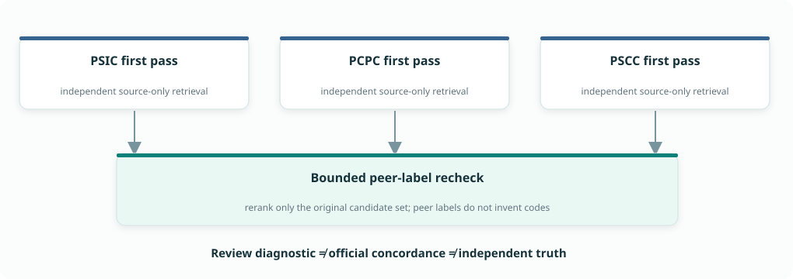

Cross-taxonomy triangulation and bounded recheck
The joint worklist aligns PSIC, PCPC, and PSCC proposals under the same source/category key—but the three schemes are not interchangeable votes. The peer recheck only tests how a *fixed candidate set* responds to admissible peer labels.
Three classification questions, one observed source value
joint_key is a stable digest of source, source field and source value, excluding taxonomy/version. Thus an observed Overture category can have separate PSIC, PCPC, and PSCC worklist rows with a shared key, retaining the distinct code meanings and review states.

Pass 1 — Independent source-only retrieval
Each taxonomy independently retrieves candidates using original source evidence. The local retriever uses a 0.6-weight word TF–IDF component and a 0.4-weight character n-gram TF–IDF component; its hierarchical pass first selects plausible coarse branches and then ranks within them. Codes from another taxonomy are not added as if they were source evidence.
Accepted reviewed codes and eligible suggested_codes may later provide peer context. Raw unaccepted candidate_codes do not cross scheme boundaries. At most one version of each peer scheme contributes; reviewed rows take precedence over suggestions.
Pass 2 — Bounded peer-context recheck
For a target row, the recheck adds other schemes' titles, not bare numerical code tokens, to the same base query. The retriever is constrained to the first-pass candidate set. Therefore a peer code can change the ordering of existing possibilities but cannot manufacture a new PSIC category absent from the original retrieval.
This is a consistency/sensitivity diagnostic, not an official correspondence between activity, product and commodity taxonomies. A bakery's principal activity and the products it sells can both be correctly classified while their code strings and taxonomy titles are unrelated.
Recheck outcomes
| Recheck condition | Reported status | Meaning |
|---|---|---|
| Top accepted candidate remains stable | STABLE |
Peer context did not change its top code. |
| Strongly different top candidate | SHIFT |
Accepted mapping needs review. |
| Change below configured margin | SHIFT_WEAK |
Inconclusive; not a decisive contradiction. |
| No comparable peers | NO_PEERS |
No recheck was possible; not success. |
| Missing control/recheck retrieval | NO_CONTROL_HIT / NO_RECHECK_HIT |
No valid comparison. |
| Candidate-only changes | CANDIDATE_STABLE / CANDIDATE_SHIFT |
Diagnostics only; cannot authorize an accepted mapping. |
| Missing peer taxonomy | MISSING_TAXONOMY |
Diagnostic unavailable. |
| PCPC sibling discrepancy | COARSENED (when applicable) |
An automatic PCPC proposal can back off to a verified common parent; reviewed rules remain unchanged. |
A group-level RECHECK state is reserved for material shifts involving accepted evidence; candidate-only movement cannot escalate the worklist by itself.
Why this is not ordinary triangulation by voting
A stable peer-context result is not independent evidence that the selected code is true. The recheck sees labels derived from related classifications of one source value; they may be semantically related, correlated, or inappropriate for a different scheme. Stability is conditional on the first-pass candidate set and retrieval scoring.
Worklist pipeline
crosswalk-init → crosswalk-suggest → bounded recheck → reviewed/adopted mapping → classify. Suggestions and recheck outputs carry audit columns such as control_query, recheck_query, recheck_candidate_codes, recheck_top_code, recheck_margin, peer_context, and joint_status.
The default batch size for first-pass retrieval is 256 unique queries; repeated identical text is vectorized once per taxonomy, and source-specific branch restrictions still apply independently. These performance choices do not alter candidate semantics.
Crucial limit: automatic promotion
Express can promote a suggestion with no valid peer verdict by default; it labels it AUTO_ACCEPTED_UNCHECKED, not REVIEWED. --no-promote-unchecked holds these suggestions; --hold-inconclusive separately holds weak shifts. Never report default Express coverage as exclusively human-reviewed coverage.
Implementation: joint_crosswalk.py · suggest.py · architecture note.